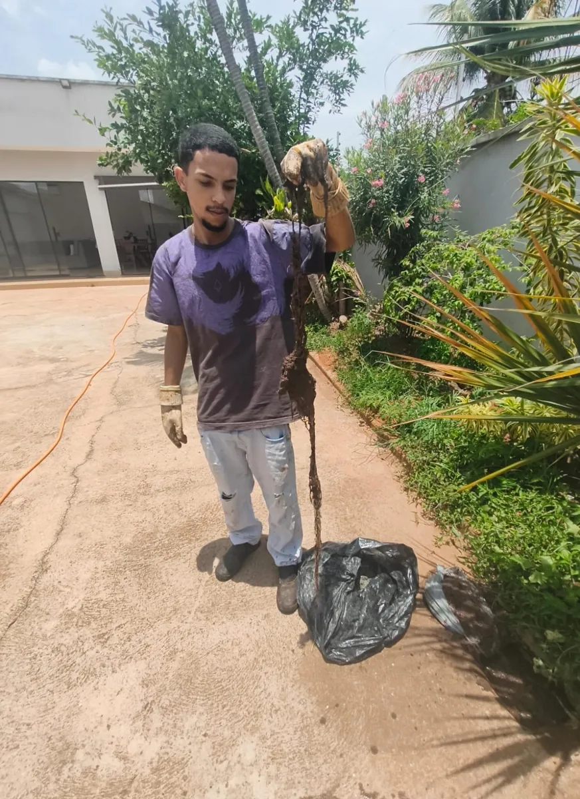
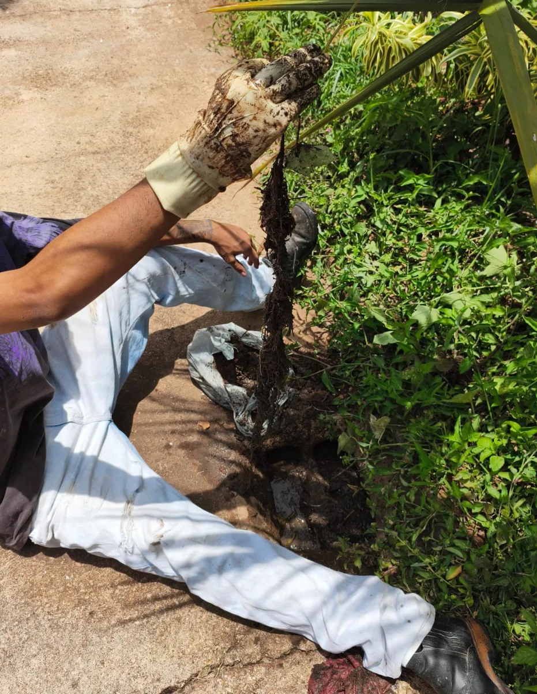

Raízes na rede pluvial: o alerta que canteiros perto da tubulação escondem
Publicado em · Atualizado em · 7 min de leitura
Raízes de plantas procuram umidade e entram na rede pluvial por juntas mal vedadas, trincas ou caixas sem tampa. Dentro do cano, elas crescem, prendem terra, folhas e objetos, e a água da chuva para de escoar. Em um atendimento recente, retiramos cerca de 2 metros de raiz de dentro de uma tubulação pluvial que alagava a casa havia 2 anos. Na maioria dos casos dá para desobstruir sem quebrar o piso, mas o canteiro precisa ser tratado, ou a raiz volta.
Resumo: raízes na rede pluvial em 6 respostas
| Pergunta | Resposta curta |
|---|---|
| Por que a raiz entra no cano? | Busca água e encontra juntas, trincas ou caixas abertas |
| Qual o sinal mais comum? | Quintal ou garagem que alaga a cada chuva forte |
| Produto químico resolve? | Não. Raiz é material vivo e fibroso |
| Precisa quebrar e trocar os canos? | Quase sempre não; avalie a desobstrução antes |
| Como evitar que volte? | Afastar o canteiro, vedar juntas e revisar antes das chuvas |
| Melhor época para revisar em Goiás | Setembro e início de outubro, antes do período chuvoso |
Como a raiz de um canteiro entra na rede pluvial?
A raiz não fura um cano inteiro. Ela entra por onde já existe uma abertura: junta de PVC mal colada, trinca causada por recalque do solo, tubo de concreto antigo ou caixa de passagem sem tampa e coberta de terra.
A rede pluvial é um alvo fácil por três motivos:
- Fica úmida por dias depois de cada chuva, e a raiz cresce na direção da água.
- Costuma ser rasa e passar rente a muros, jardins e canteiros.
- Carrega terra e matéria orgânica, que alimentam a raiz dentro do tubo.
Uma vez dentro, a raiz engrossa e se ramifica no sentido do fluxo. Ela vira uma peneira: segura folhas, areia e objetos, e o cano fecha aos poucos. Por isso o problema costuma piorar ano a ano, e não de uma vez.
Caso real: 2 anos de alagamento e 2 metros de raiz dentro do cano
Este atendimento mostra, na prática, o que explico no guia sobre rede pluvial entupida.
Fomos chamados para desentupir a rede de esgoto de uma residência. Durante o serviço, encontramos a rede pluvial do imóvel com as caixas cobertas de terra. Alertamos a cliente sobre o risco de alagamento com as chuvas de fim de ano.
A resposta dela mostrou o tamanho do problema: a casa já alagava havia 2 anos. Ela tentou desobstruir por conta própria várias vezes, sem resultado, e estava desistindo. Um pedreiro tinha recomendado quebrar o piso e trocar toda a tubulação.
Propusemos tentar a desobstrução antes de qualquer quebra. Dentro da rede, encontramos:
- Bolas de tênis e bolinhas de cachorro
- Tampas de garrafa
- Terra compactada e restos de cimento endurecidos na parede do cano
- Raízes do canteiro ao lado, com cerca de 2 metros de comprimento
Os objetos explicam parte do entupimento. Bolinhas rolam pelo quintal e entram por ralos sem grelha ou caixas abertas. Mas foram as raízes que transformaram a rede em uma barreira: elas prenderam cada objeto e cada punhado de terra que passava.
Usamos hidrojateamento: o jato de alta pressão cortou as raízes, soltou o cimento e arrastou os objetos até a caixa, onde foram retirados. Depois, testamos o escoamento com água e a rede voltou a funcionar sem quebrar o piso. A cliente foi orientada sobre o canteiro, porque a raiz que ficou no solo continua procurando água.


Cimento na rede pluvial: o perigo de lavar ferramentas no ralo durante obra ou reforma
No mesmo desentupimento, encontramos cimento endurecido dentro da tubulação. Ele vem de um hábito comum em obra e reforma: lavar baldes, colher de pedreiro, betoneira e desempenadeira no ralo do quintal.
O cimento não se dissolve na água. Ele assenta no fundo do cano, endurece e fica preso à parede. Com isso:
- O diâmetro útil do cano diminui a cada lavagem
- A superfície fica áspera e passa a segurar terra, folhas e raízes
- Na próxima chuva forte, a água não tem por onde passar
No vídeo deste caso, mostro como o cimento fica dentro da tubulação e comparo dois trechos da mesma rede: um já desobstruído e limpo e outro ainda sujo, antes da passagem do hidrojato.
Como evitar durante uma obra ou reforma:
- Lave ferramentas dentro de um balde ou tambor, nunca no ralo
- Deixe a água descansar até o material assentar no fundo
- Descarte o resíduo sólido junto com o entulho da obra
- Tampe ralos e caixas de passagem enquanto a obra durar
- Combine essa regra com o pedreiro antes do início do serviço
Quais sinais indicam raiz dentro da rede pluvial?
- Quintal, garagem ou área externa que alaga em toda chuva forte, mesmo com ralos limpos
- Água que escoa devagar e volta pelo ralo durante a chuva
- Caixa de passagem com terra, lodo ou raízes finas aparecendo
- Entupimento que volta pouco tempo depois de uma limpeza
- Canteiro, árvore ou arbusto a menos de 1 ou 2 metros da linha do cano
- Piso cedendo ou trincando em cima do trajeto da tubulação
Quando dois ou mais desses sinais aparecem juntos e há plantas perto, a raiz deve ser a primeira suspeita.
Qual a distância segura entre canteiro e rede pluvial?
Não existe uma medida única, porque depende da planta. A regra prática citada por paisagistas é manter a planta a uma distância equivalente, no mínimo, à metade da largura da copa adulta. Para árvores de raiz agressiva, como o fícus, a recomendação vai de 10 a 15 metros de qualquer construção ou tubulação.
Na minha experiência com canteiros residenciais, o que mais causa problema é:
- Canteiro plantado em cima ou rente à linha do cano
- Arbustos e árvores de raiz superficial perto de caixas de passagem
- Canteiro sem fundo, sobre solo raso, que força a raiz a correr para os lados
Antes de plantar, descubra por onde passa a rede pluvial. Prefira espécies de raiz profunda ou de pequeno porte perto de tubulações, como ipê ou pitangueira, e mantenha as caixas de inspeção livres e com tampa.
Dicas caseiras que ajudam (e as que não funcionam)
O que você pode fazer em casa, com segurança:
- Teste da mangueira: jogue água em cada ralo externo em dia seco e veja se ela some rápido. Água parada indica obstrução.
- Abra as caixas de passagem e retire terra e folhas acumuladas na superfície.
- Coloque grelha em ralos externos. Bolinhas de cachorro e bolas de tênis entram por ralos abertos.
- Recolha brinquedos e objetos do quintal antes das chuvas.
- Pode as raízes visíveis do canteiro no lado da tubulação, sem cavar perto do cano.
Dicas que circulam em fóruns e redes sociais, mas que não recomendo:
- Soda cáustica ou ácido: não dissolvem raiz grossa e podem danificar o PVC e a vedação das juntas.
- "Matador de raiz" em pó: é feito para esgoto e não deve ir para rede que despeja em solo, jardim ou galeria pública.
- Arame ou vergalhão empurrado na marra: pode furar o cano ou empurrar a raiz e os objetos ainda mais para dentro.
- Despejar água em alta pressão sem saber onde está a obstrução: alivia por dias e não tira a raiz.
Em fóruns americanos de manutenção e na central de dúvidas da Roto-Rooter, os técnicos repetem o mesmo ponto: a raiz que já está no cano precisa ser cortada, e o produto, quando usado, só ajuda a atrasar o crescimento. O tipo de cano define a ferramenta. Cano fino ou corrugado pode ser rompido por máquina inadequada.
Precisa quebrar o piso e trocar os canos?
Na maioria dos casos, não. No caso deste artigo, o primeiro orçamento era quebrar tudo. A desobstrução resolveu sem quebra.
A quebra só se justifica quando:
- O cano está rompido, amassado ou deslocado
- A raiz entra sempre pelo mesmo ponto, e ele não tem como ser vedado
- A rede não tem caixas de inspeção e não há acesso por nenhum ponto
Quem decide isso deve ser quem viu a rede por dentro. Trocar canos antes de desobstruir é pagar por uma obra que, muitas vezes, não era necessária. Veja também quando é preciso quebrar o piso para desentupir.
Quando chamar um profissional?
- O quintal já alagou mais de uma vez
- A limpeza caseira não resolveu ou o entupimento volta
- Há raízes visíveis na caixa de passagem
- Alguém recomendou quebrar o piso e você quer uma segunda avaliação
- O período de chuvas está chegando. Em Goiânia, ele vai de outubro a abril, e revisar a rede antes é mais barato que limpar depois do alagamento.
Para avaliar a gravidade do problema, veja os 4 níveis de entupimento.
Perguntas frequentes
Raiz de canteiro pequeno consegue entupir a rede pluvial?
Sim. No caso deste artigo, as raízes vinham de um canteiro, não de uma árvore grande, e chegaram a cerca de 2 metros dentro do cano.
Depois de tirar a raiz, ela volta?
Pode voltar, porque a planta continua viva e a abertura no cano continua lá. Afastar o canteiro, vedar o ponto de entrada e revisar a rede antes das chuvas reduzem muito o risco.
De quanto em quanto tempo revisar a rede pluvial?
Pelo menos uma vez por ano, antes do período chuvoso. Imóveis com canteiros ou árvores perto da tubulação merecem atenção maior.
Como saber por onde passa a rede pluvial do meu terreno?
Siga o caminho entre os ralos externos, as caixas de passagem e a saída para a rua. Se o imóvel tiver projeto hidráulico, ele mostra o trajeto.
Posso lavar ferramentas de obra no ralo do quintal?
Não. Cimento e argamassa endurecem dentro do cano e não saem com água. Lave em um balde, deixe assentar e descarte o resíduo com o entulho.

Sobre o autor
Lucas Nonato é fundador da BV Desentupidora em Goiânia e trabalha há 10 anos com desentupimento, hidrojateamento, limpeza de caixa de gordura e redes de esgoto e pluviais em Goiânia, Aparecida de Goiânia, Anápolis, Itaberaí, Inhumas e região. Os casos citados neste artigo são de atendimentos reais da equipe. Perfil no LinkedIn.
Fontes
- Target Normas. ABNT NBR 10844: Instalações prediais de águas pluviais (resumo da norma).
- TRF6. Caderno de práticas de projeto: drenagem de águas pluviais.
- Roto-Rooter. Perguntas frequentes sobre raízes em tubulações.
- UAI. Distância segura entre árvores, muros e encanamentos.
- UAI. Raízes de fícus e distância de construções.
- Estado de Minas. Espécies de árvores e riscos a tubulações.
- UEG. Estações seca e chuvosa em Goiânia.
- Mais Goiás / Inmet. Retorno das chuvas em Goiânia.
- Experiência de campo da equipe BV Desentupidora (atendimentos em Goiânia, Itaberaí, Inhumas, Heitoraí e região).